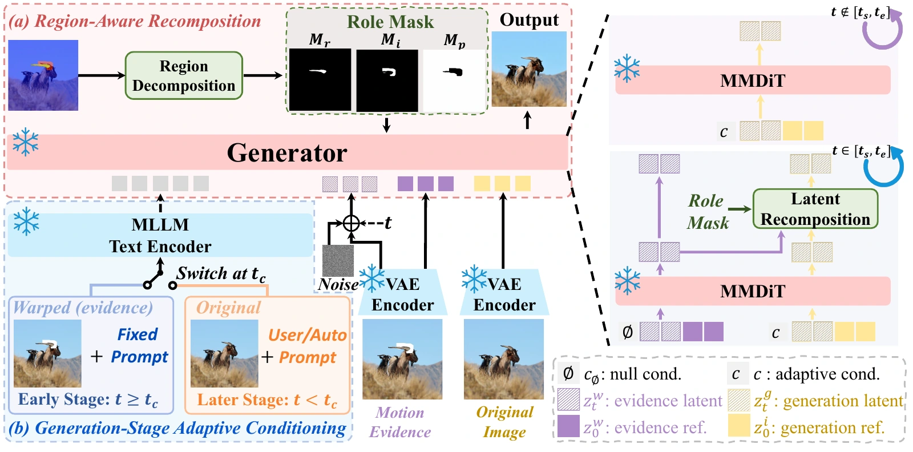
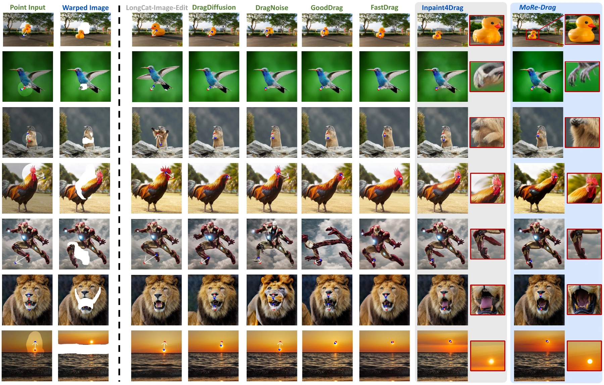

Abstract
Modern image editors excel at semantic manipulation and visual synthesis, yet remain limited in precise spatial control, motivating the development of drag-based editing. However, existing drag-based methods often struggle to balance drag accuracy with natural, plausible, and intent-aligned generation. We propose MoRe-Drag, a motion-grounded drag-based editing method. Our key insight is to treat pixel-space warping as coarse motion evidence, and to inject this evidence into the generative sampling trajectory. Specifically, MoRe-Drag performs region-aware latent recomposition over refinement, inpainting, and anchor regions, coupled with stage-adaptive conditioning that progressively shifts from motion-grounded structure formation to semantic refinement. We further support an instruction-free interface by adapting the MLLM-based text encoder for drag-aware instruction inference. Experiments on DragBench-SR and DragBench-DR show that MoRe-Drag substantially improves drag precision over strong base editors and achieves superior drag accuracy among SOTA drag-based methods, while delivering strong semantic consistency and visually realistic results. Code and dataset will be publicly released.
Framework

Experiments
Quantitative Results
| Method | DragBench-SR | DragBench-DR | ||||
|---|---|---|---|---|---|---|
| MD ↓ | CP ↑ | PF ↑ | MD ↓ | CP ↑ | PF ↑ | |
| DragDiffusion | 41.08±0.43 | 92.75±0.38 | 77.15±1.49 | 31.61±0.23 | 96.46±0.43 | 78.45±0.95 |
| DragNoise | 47.64±1.08 | 79.00±0.25 | 61.56±0.31 | 30.05±0.01 | 91.46±1.34 | 81.02±0.18 |
| GoodDrag | 28.94±0.40 | 94.50±0.13 | 76.50±0.39 | 23.21±0.12 | 95.36±0.24 | 83.94±0.04 |
| FastDrag | 23.17±0.19 | 94.00±0.25 | 79.62±4.38 | 29.50±0.12 | 92.73±0.73 | 75.60±1.63 |
| ContextDrag* | 19.07 | 92.25 | 82.00 | 21.66 | 90.90 | 83.78 |
| Inpaint4Drag | 19.79±0.18 | 93.00±0.13 | 81.00±0.04 | 21.37±0.32 | 88.53±0.25 | 82.77±0.76 |
| + FLUX.1-Fill-dev | 18.96±0.18 | 94.69±0.53 | 81.41±1.41 | 21.16±0.28 | 91.70±0.49 | 77.19±1.40 |
| Qwen-Image-Edit | 50.48±0.12 | 94.57±0.63 | 83.59±0.76 | 47.90±0.27 | 92.43±0.41 | 88.17±0.03 |
| + MoRe-Drag | 23.85±0.62 | 90.15±0.12 | 70.96±0.58 | 26.35±0.17 | 87.31±0.00 | 78.75±0.89 |
| LongCat-Image-Edit | 53.62±0.09 | 94.00±0.50 | 92.08±1.17 | 46.73±0.24 | 91.28±0.55 | 91.20±0.10 |
| + MoRe-Drag (Ours) | 18.54±0.22 | 96.36±0.38 | 86.36±4.06 | 20.03±0.21 | 93.15±0.23 | 84.82±0.98 |
Results from Table 1. MD: Mean Distance (↓); CP: Concept Preservation (↑); PF: Prompt Following (↑). CP and PF are scaled by 100. Results are averaged over three runs with standard deviations; * denotes results reported in the original paper. Bold indicates the best result among drag-based methods; base text editors are excluded from highlighting.
Qualitative Comparisons

BibTeX
@inproceedings{pu2026more,
title={Drag as Evidence: Motion-Grounded Latent Recomposition for Drag-Based Editing},
author={Xinyu Pu and Hongsong Wang and Jie Gui and Pan Zhou},
booktitle={Advances in Neural Information Processing Systems},
year={2026},
eprint={2609.36755},
archivePrefix={arXiv},
primaryClass={cs.CV},
url={https://arxiv.org/abs/2609.36755}
}